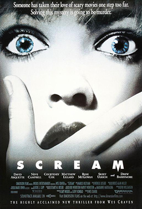
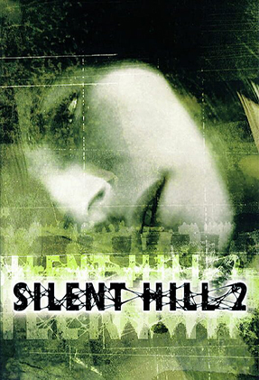
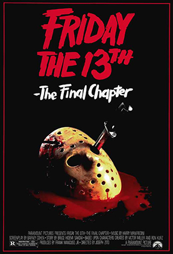
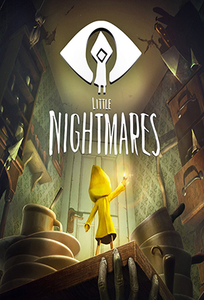

Las mejores reseñas dentro del universo más aterrador
Fanáticos del terror nació con la idea de crear un espacio
para todos los amantes de este género. Aquellos que están en búsqueda de nuevas experiencias
para atormentar sus noches o para escribir sus propias reseñas de sus obras favoritas. Ya sea películas, videojuegos
o libros de terror, acá podrás encontrar críticas de obras de todo tipo ligadas al horror.
Scream (1996)

Un año después del asesinato de su madre, una adolescente es aterrorizada por un nuevo asesino,
que tiene como objetivo a la chica y a sus amigos utilizando las películas de terror como parte
de un juego mortal. Ahora nadie está a salvo... y todo el mundo es sospechoso. Resolver este misterio
va a resultar mortal.
Scream es una película de terror slasher de 1996 escrita por Kevin Williamson y dirigida por Wes Craven,
y fue filmada mayormente en Santa Rosa (California).
La película está protagonizada por un elenco conformado por Neve Campbell,
David Arquette y Courteney Cox.
Ver más →
Sillent Hill 2 (2001)

James Sunderland ha llegado al pueblo de Silent Hill después de haber recibido
una carta de su esposa, Mary, a pesar de que había muerto de una enfermedad hace tres años.
La carta afirma que Mary está a la espera de James en su "lugar especial", lo que confunde a James,
ya que todo el pueblo de Silent Hill era su "lugar especial", pero finalmente decide dirigirse a
Rosewater Park.
Ver más →
Viernes 13 parte IV: El último capítulo (1984)

Jasón, el más impopular de los habitantes de Cristal Lake, regresa para causar mayores
estragos en esta parte. Tras su resurgimiento en el depósito de cadáveres de un hospital,
el asesino enmascarado centra su venganza en la familia Jarvis y en un grupo de despreocupados
adolescentes. El joven Tommy Jarvis es un gran aficionado al cine de terror con un talento
especial para las máscaras y el maquillaje.
Ver más →
Little Nightmares (2017)

Una hambrienta niña de nueve años llamada Six es secuestrada en Las Fauces, un misterioso
barco de abastecimiento para el capricho de locas y poderosas criaturas. Después de despertar
en las profundidades más bajas de Las Fauces, Six decide escapar de los confines duros,
teniendo momentos regulares de hambre insoportable. Nuestro objetivo será guiar a Six
hasta la salida, y para ello deberemos superar un montón de puzzles repartidos
por una serie de pesadillescos niveles para poder seguir avanzando.
Ver más →